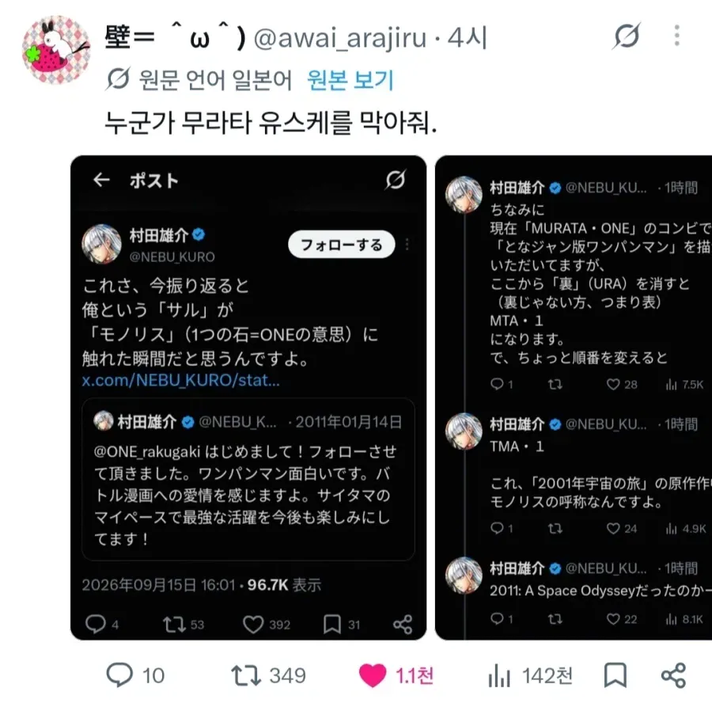
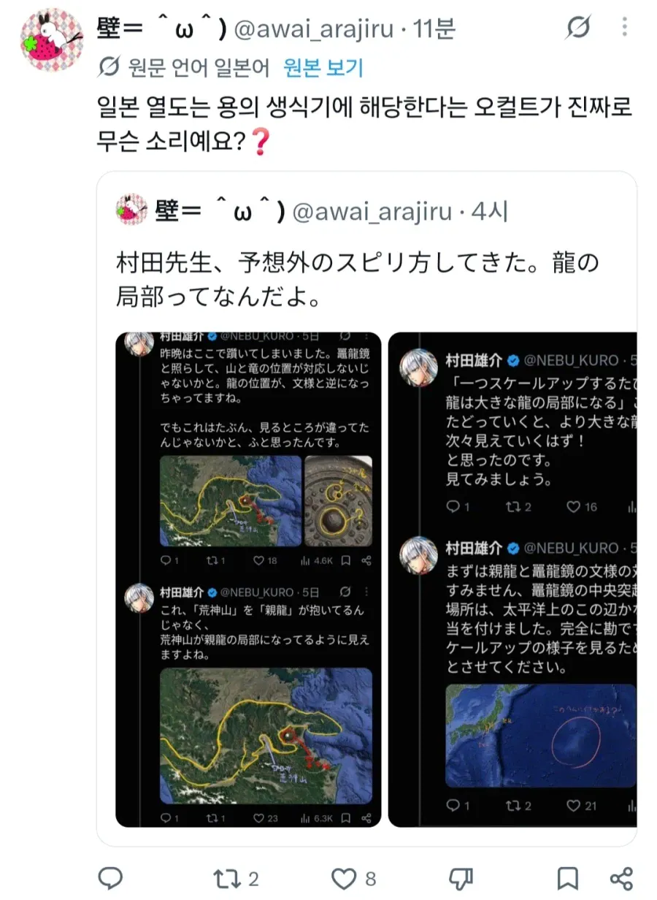
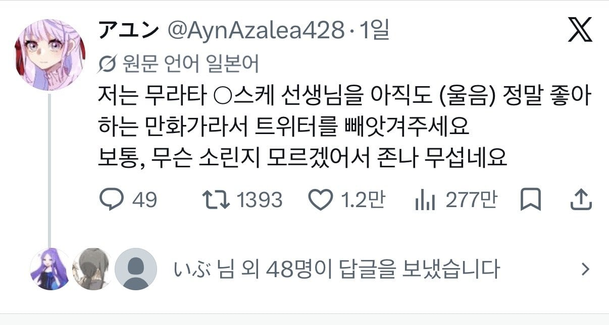
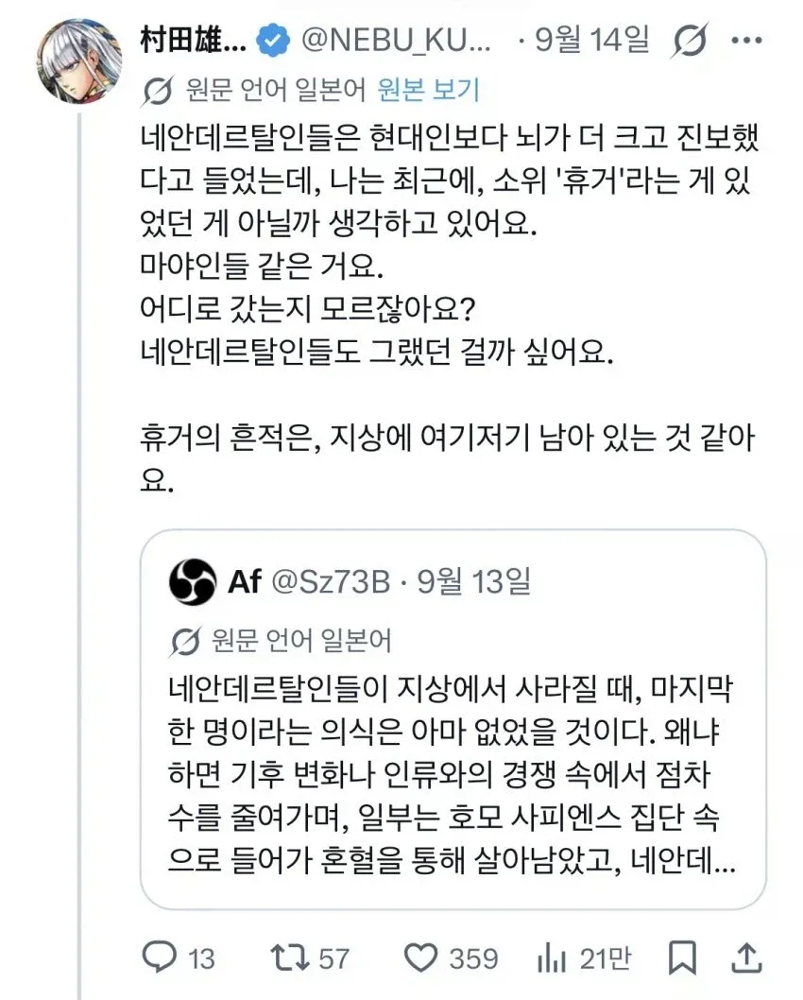
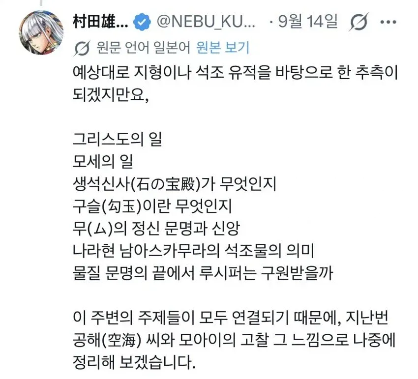

원펀맨 리메이크 그작 무라타 유스케가
최근들어 오컬트적인 헛소리 줄줄이 트위터에 싸지르는 중
(짤 말고도 존나 셀수도 없이 많음)
싹다 헛소리에 말도 중구난방이라서 팬들은 조현병 초기 증상이라고 여기고 있고 정신병원 보내야 한다고 하는 중
이제 작가로서 끝인건가….





원펀맨 리메이크 그작 무라타 유스케가
최근들어 오컬트적인 헛소리 줄줄이 트위터에 싸지르는 중
(짤 말고도 존나 셀수도 없이 많음)
싹다 헛소리에 말도 중구난방이라서 팬들은 조현병 초기 증상이라고 여기고 있고 정신병원 보내야 한다고 하는 중
이제 작가로서 끝인건가….
그림만 그려라 그림만....
그림만 그리다 저렇게 사람이 이상해진듯
그래서 리메이크 번복을 그렇게나..
그건 글작가
글작가의 오리지날은 번복없이 쭉쭉 나가는거 같은데
그거는 루머였고 원작가랑 무라타랑 서로 협의하면서 리메이크 스토리 짯다고 함
근데 다시 그리자고 하는 쪽이 무라타란 이야기가 있음
아 무라타문제 맞구나
협의=한쪽이 수락할때까지 박박우기기
ㄴㄴ 리메이크 스토리는 대부분 그작이 수정한다고함
원복도 그작 욕심에 의한거고 리메이크보면 원작가가 안하는 그작 스타일의 실소나오는 게그도 은근있음
안돼..
제발 계정 해킹이라고 해줘...
제발 계정 해킹
고맙다..
스토리 짜다가 정신분열왔나; 그러니까 평생 못해서 안하던짓을 왜하나
저 사람은 스토리 안짜지않나?
스트레스가 많은가보네
엄청잘그리는작가아닌가 정신적으로 몰린건가..

뭔일 날것같으면 저 집은 아들이 잘 막을것같긴해
아들 속성이 물리라서 막을 수 있다
??? : 병원에 가기싫으면 힘을 길럿어야지
아들이 해병
조현병은 그냥 오는거라서 스트레스같은게 상관이 아예없진 안겠지만
유전율 80%
단백질 유전자 문제인걸로 암
결국 미친건가
안돼.. 원펀맨 계속 그려줘
말하는 게 진짜 조현병 같은데; 빨리 병원좀 데려가줘
무라타 유스케 아내는 한국인이고 아들은 암흑 헬창타락함
조현병 심하면 걍 문장 완성이 안되던데 아직 그정도는 아닌듯
술마셨나보지
조현병이 저 나이에도 발병이 되나?
조현병까진 아니고 일본식 환빠 느낌이네
원펀맨 스토리를 글작가, 그림작가, 잡지사 어느 쪽에서 자꾸 뒤엎는거지
“수정·리메이크는 전적으로 무라타의 아이디어”
무라타: 수정해야 할 분량에 관해서는 절대 질 수 없습니다. 필요한 만큼 수정합니다. 원고가 완성된 후에도 다시 그립니다. 아이쉴드 21 연재 당시에는 수정이 불가능해서 답답했습니다. 그래서 원 팬 맨에서는 마음껏 수정합니다. 타협하지 않기 때문에 마감일을 놓치는 경우도 있습니다. 편집부 모두에게 미안하지만, 저는 이기적으로 그 부분을 최대한 수정하기로 했습니다.
아이고 그렇구만... 단행본 사서 보는데 수정2까지 가도 결국 단행본에서는 처음보는 장면이 많이 나오던데...;;
휴거 휴거가 온다!!
그림만그려줘제발
최대한 좋게 해석하자면... 만화작가는 소재가 필요하니까 아무리 별 괴상한 거여도 오컬트 관련 자료로 쓰려고 모으는거 아닐까
그런거라면 sns 끊어야할듯?
자료조사한다고 이것저것 너무 많이 알아보다가 자기가 뭔가 깨달았다고 믿어버린 듯
아... 안타깝네
원작 최근화 보면 고장난 제노스가 조헌병처럼 중얼거리던데..
조현병자들이 쓴 글 특징이 중구난방에 안읽히고 뭔 소리 하는지 모르겠다는 건데
유튜버 홍반장이 쓴 글도 그랬고 더쿠년 중에 무슨 강다니엘 이모? ㅇㅈㄹ 했던 걔도 조현병 초기 증상 같던데
저건 중증이네